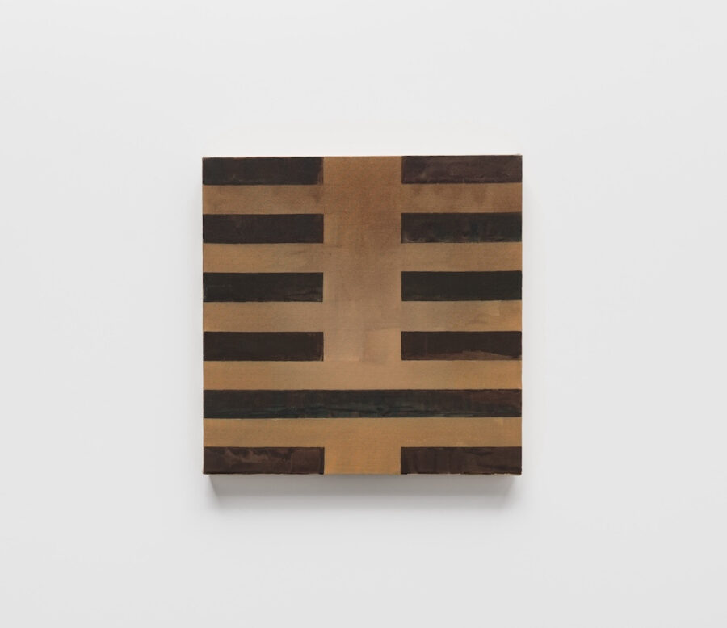

Leah Ke Yi Zheng: Change
Leah Ke Yi Zheng’s upcoming exhibition presents a complete series of 64 paintings based on the hexagrams of the I Ching (Book of Changes), a foundational text in Chinese philosophy that offers insights into the changing nature of existence. Each painting reflects on a hexagram not through literal representation, but through an evolving visual language shaped by abstraction, intuition, and the interplay of light and material. As she works with silk and hand-built hardwood stretchers, in continual difference, the exhibition becomes a meditation on change itself: how it is read, made visible, and experienced through painting.
Zheng’s practice brings together traditional Chinese materialities and conceptual art methodologies to explore transformation, multiplicity, and the logic of variation. It is rooted in a dialogue between Eastern and Western modes of thought and influenced by thinkers such as John Cage and Yuk Hui. In this project, the I Ching is not only a reference, it is a method, a structure, and a philosophical companion. This is a one-work exhibition: Zheng considers the full sequence as a total and single work in itself, with every painting still an individualized piece.
For Change, I Ching (64 Paintings), Zheng has also subtly reshaped the exhibition architecture. The transformation is understated rather than dramatic, but carefully calibrated to heighten the play of light throughout the space, and, at times, to redirect it in dialogue with the paintings. By covering certain windows, adjusting the proportions of select walls, and building a new rhythm around the room’s perimeter, Zheng creates conditions that privilege what she calls “the light of the here and now.” As daylight shifts over the course of the day, the silk paintings shift with it, their surfaces absorbing and reflecting minute changes in color and brightness. In turn, these variations reveal the altered space itself, making the architecture and the paintings co-responsive, changing together in real time.
Curated by Myriam Ben Salah and Karsten Lund.
About the Artist
LEAH KE YI ZHENG (b.1988, China) lives and works in Chicago. Recent solo and two-person exhibitions include Machine(s) at Layr, Vienna (2025); I-Ching/Machineat Mendes Wood DM, New York (2025); Leah Ke Yi Zheng at Mendes Wood DM, Brussels (2024); John Cage, Leah Ke Yi Zheng: The Grasshopper Lies Heavy at Castle Gallery, Los Angeles (2024); Leah Ke Yi Zheng at David Lewis Gallery, New York (2023); and Currency @ Swiss National Bank, Zurich at Soccer Club Club, Chicago (2021). Recent group exhibitions include New Museum, New York (2025); Zeno X Gallery, Antwerp (2023); and Caffé Centrale, Monte Castello di Vibio (2022) among others. She was awarded a 2019 – 2021 Fellowship from The Arts Club of Chicago.
Credits
Lead support for this exhibition is provided by Murat Ahmed & Katherine Mackenzie and School Museum Fund, The Hees Family. Principal support is provided by Gay-Young Cho and Christopher Chiu.